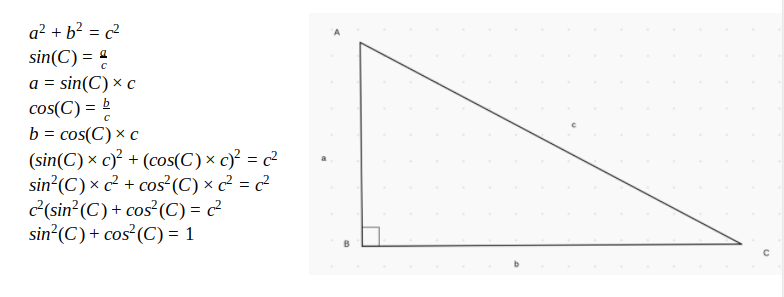
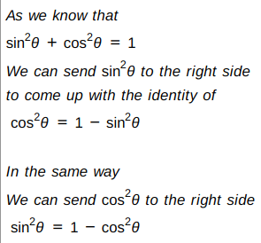
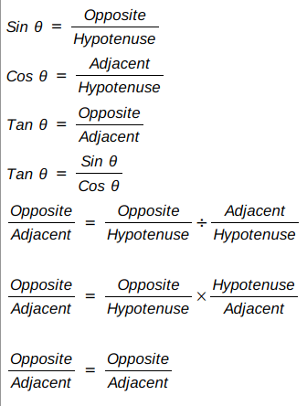

◺ The Right Angled Triangle
The angle of reference, is one of the angles other than the right angle. It is the viewpoint from which the triangle observed. Using this angle we can determine the adjacent and the opposite sides. Note : The 90 degree angle CANNOT be refered to as the angle of reference / viewpoint. It is abbrevieted as the greek letter Theta(θ).
Opposite refers to the side opposite the angle of reference.
Adjacent refers to the side adjacent to the angle of reference.
The hypotenuse is the longest side of a triangle, it is the side opposite to the 90 degree angle.
ƒ(x) Trigonometric Functions
There are a few ratios between the sides of a right angled triangle that help us find out values for missing sides and angles. The basic trigonometric ratios are Sine, Cosine, Tangent better known as Sin, Cos, Tan.
The value of sin is equal to the length of the opposite side divided by the length of the hypotenuse.
There is an acronym to memorise the value of sin :
S - Sin
O - Opposite
H - Hypotenuse
Sin is equal to Opposite over Hypotenuse.
The name cosine came because the cos is the complementary angle of sine hence adding co and sine making cosine.
The value of cos is equal to the length of the adjacent side divided by the length of the hypotenuse.
There is an acronym to memorise the value of cos is :
C - Cos
A - Adjacent
H - Hypotenuse
Cos is equal to Adjacent over Hypotenuse.
The value of tan is equal to the length of the opposite side divided by the length of the adjecent side.
There is also an acronym for tan :
T - Tan
O - Opposite
A - Adjacent
Tan is equal to Opposite over Adjacent.
Trigonometric Identities
Here are some of the few trigonometric identities :
Derivation of the first identity
Derivation of the second and third identity
Derivation of the fourth identity
Inverse Trigonometric Functions
Just like there are a few trigonometric functions, there also are inverse trigonometric functions. Arcsin, Arccos and Arctan. Also refered to as: Sin-1, Cos-1 and Tan-1.
Arcsin is considered as the inverse function of sin. What this means is that the arcsin of the sin of a number results in the same number.
Arcsin is considered as the inverse function of cos. What this means is that the arccos of the cos of a number results in the same number.
Arctan is considered as the inverse function of tan. What this means is that the arctan of the tan of a number results in the same number.
For ease in understanding lets take an example:
Lets find the value of ∠A. For that we first need to find the value of cos(A).
As we know that Cos is equal to Adjacent over Hypotenuse (CAH).
cos(A) = 50 / 100
So, to find the angle A, we need to find the value of arccos of the number we just obtained.
cos-1(50 / 100) = A
A = 60o